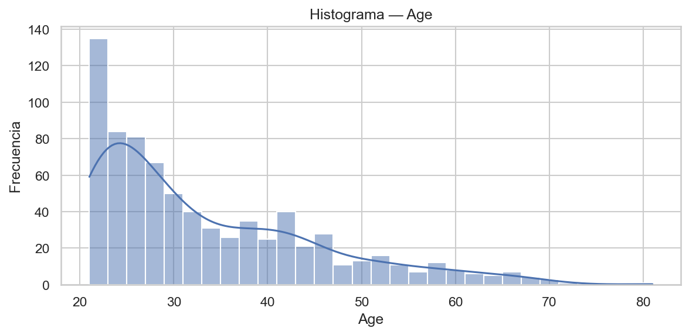
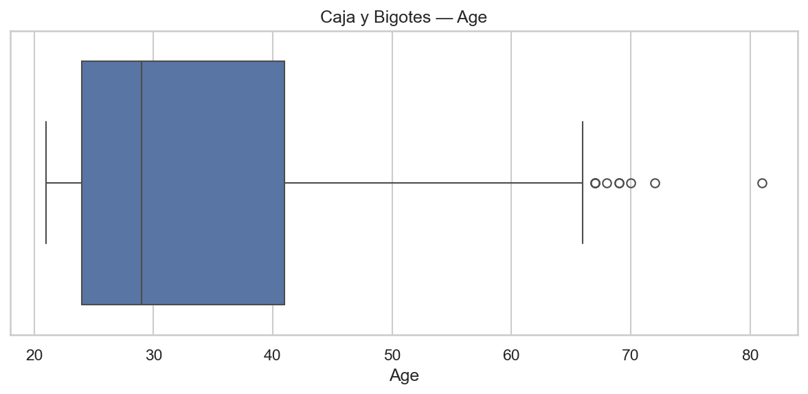
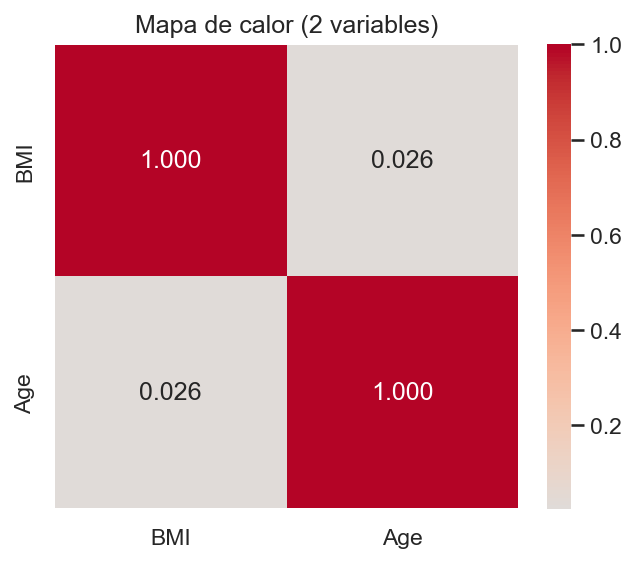

Explicación: La mayor concentración está en el bin (27.98, 32.87] (207 obs, 27.0%). Rango total [18.20, 67.10], media 32.46, mediana 32.30.
Explicación: La mayor concentración está en el bin (27.98, 32.87] (207 obs, 27.0%). Rango total [18.20, 67.10], media 32.46, mediana 32.30.Diagrama de barras — BMI
Explicación: La mayor concentración está en el bin (27.98, 32.87] (207 obs, 27.0%). Rango total [18.20, 67.10], media 32.46, mediana 32.30.
Histograma — BMI
 Explicación: Distribución sesgada a la derecha (skew=0.60); dispersión (std=6.88). La media vs mediana sugiere cola derecha.
Explicación: Distribución sesgada a la derecha (skew=0.60); dispersión (std=6.88). La media vs mediana sugiere cola derecha.
Caja y Bigotes — BMI
 Explicación: Mediana 32.30, Q1=27.50, Q3=36.60 (IQR=9.10). Posibles atípicos (regla IQR): 8. Umbrales: [13.85, 50.25].
Explicación: Mediana 32.30, Q1=27.50, Q3=36.60 (IQR=9.10). Posibles atípicos (regla IQR): 8. Umbrales: [13.85, 50.25].
Diagrama de barras — Age
 Explicación: La mayor concentración está en el bin (20.999, 27.0] (332 obs, 43.2%). Rango total [21.00, 81.00], media 33.24, mediana 29.00.
Explicación: La mayor concentración está en el bin (20.999, 27.0] (332 obs, 43.2%). Rango total [21.00, 81.00], media 33.24, mediana 29.00.
Histograma — Age
 Explicación: Distribución sesgada a la derecha (skew=1.13); dispersión (std=11.76). La media vs mediana sugiere cola derecha.
Caja y Bigotes — Age
 Explicación: Mediana 29.00, Q1=24.00, Q3=41.00 (IQR=17.00). Posibles atípicos (regla IQR): 9. Umbrales: [-1.50, 66.50].
Mapa de calor (correlación entre las dos variables)
 Explicación: Corr(BMI, Age) = 0.026 → correlación baja positiva.
Rangos y estadísticos (solo 2 variables)
| min | max | mean | median | std | skew | |
|---|---|---|---|---|---|---|
| BMI | 18.2 | 67.1 | 32.455 | 32.3 | 6.875 | 0.599 |
| Age | 21 | 81 | 33.241 | 29 | 11.76 | 1.13 |
Atípicos por IQR (conteo)
| posibles_atipicos_IQR | |
|---|---|
| BMI | 8 |
| Age | 9 |
1) ¿Hay alguna variable que no aporta información?
Ninguna muestra varianza ~0; ambas aportan variabilidad.
2) Si tuvieras que eliminar variables, ¿cuáles y por qué?
Eliminación solo si hubiera varianza casi nula o correlación ~1 con otra variable; con estas dos no aplica.
3) Rangos (min–max):
- BMI: min=18.2, max=67.1
- Age: min=21.0, max=81.0
4) ¿Existen datos atípicos?
(Criterio IQR)
- BMI: 8
- Age: 9
5) ¿Existe correlación alta?
Corr(BMI, Age) = 0.026 → baja positiva.